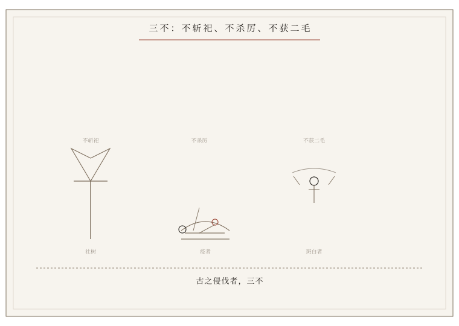

檀弓下 · 四·四十五 · 第 370 课
吴侵陈，斩祀杀厉。师还出竟，陈大宰嚭使于师。夫差谓行人仪曰：「是夫也多言，盍尝问焉？师必有名，人之称斯师也者，则谓之何？」大宰嚭曰：「古之侵伐者，不斩祀，不杀厉，不获二毛。今斯师也，杀厉与？其不谓之杀厉之师与？」曰：「反尔地，归尔子，则谓之何？」曰：「君讨敝邑之罪，又矜而赦之，师与有无名乎？」
说什么事：吴国侵陈，砍了社稷的树木，杀了染疫的人。吴军退回国境时，陈国的大宰嚭到军中办事。夫差对行人仪说：「这个人多话，何不试探着问他一句？出兵必有个名目，人家称我们这一趟，会称什么？」大宰嚭说：「古时侵伐的人，不砍社稷之祀，不杀染疫之人，不俘鬓发斑白的老者。如今这一趟，杀了染疫的人吧？那还能不叫它『杀厉之师』吗？」夫差说：「若我把地还你、把俘获的臣民归你，那又叫什么？」大宰嚭答：「君讨敝邑之罪，又哀矜而赦之——这样的师，还会有没名目的吗？」
落在哪一层：以「名」量事。论一件事做得好不好，最后都记在它的名上。
为何编在此位：上节论礼之节，此节论兵之节。一以节哀，一以节暴。同一条理，用在两处。
【经】吳侵陳，斬祀殺厲。師還出竟，陳大宰嚭使於師。夫差謂行人儀曰：「是夫也多言，盍嘗問焉？師必有名，人之稱斯師也者，則謂之何？」大宰嚭曰：「古之侵伐者，不斬祀，不殺厲，不獲二毛。今斯師也，殺厲與？其不謂之殺厲之師與？」曰：「反爾地，歸爾子，則謂之何？」曰：「君討敝邑之罪，又矜而赦之，師與有無名乎？」
【注】祀，神位有屋樹者。厲，疫病。吳侵陳，以魯哀元年秋。／大宰、行人，官名也。夫差，吳子光之子。盍，何不也。嘗猶試也。夫差修舊怨，庶幾其師有善名。／獲謂系虜之。二毛，鬢髮斑白。／欲微切之，故其言似若不審然，正言殺厲，重人。／子謂所獲民臣。／又微勸之，終其意。吳楚僭號稱王。
【疏】「古之侵伐者，不斬祀，不殺厲，不獲二毛」——此谓以至胜攻至暴，用兵如此。若两军相敌则不然。《左传》云：「虽及胡耇，获则取之。」大宰嚭特举古之善以駮吴师之恶。／注「正言杀厉重人」——以其杀人，故重于斩祀。若其不杀，直拘囚人而已，则轻也。故《穀梁传》云：「苞人民欧牛马曰侵，斩树木坏宫室曰伐。」是侵轻而伐重也。／「师与有无名乎」者，既反地归子，其事既善，师岂有无善名乎？言必有善名也。「与」是语辞。／注「又微劝之，终其意」——上以「微切之」，谓讥斩祀杀厉；今复劝之反地归子，故言「又」也。因吴王反地归子，则云师有善名，是「微劝之」也。「终其意」者，上讥切斩祀及杀厉，是初有其意，欲吴哀矜；既得吴哀矜，则云师有善名，是终竟其欲哀矜之意。
侵 不宣而进兵。注引《穀梁》「苞人民欧牛马曰侵」。
斩祀 砍伐社稷神位所在之树木。注「祀，神位有屋树者」。
杀厉 杀染疫之人。厉，疫病。
竟 境。出竟，出境。
大宰嚭 陈国之大宰，名嚭。与吴之大宰嚭同名异人。
行人仪 行人，官名；仪，其名。
盍尝问焉 何不试着一问。
师必有名 出兵必有名义。
二毛 鬓发斑白者，即老人。
反尔地，归尔子 还你土地，归你俘获之民臣。
矜 哀怜。
师与有无名乎 这样的师还能没有名吗。「与」为语辞。
吴国侵陈，砍了社稷的树木，杀了染疫的人。吴军退境时，陈国大宰嚭到军中办事。夫差对行人仪说：「这人多话，何不试问一句？出兵必有名义，人家称我们这一趟，会称什么？」大宰嚭说：「古时侵伐者，不斩祀，不杀厉，不俘老人。如今这一趟，杀了染疫的人吧？能不叫它『杀厉之师』吗？」夫差说：「若我还你土地、归你臣民，那又叫什么？」嚭答：「君讨敝邑之罪，又哀矜而赦之——这样的师，还会有没名的吗？」
此章是一段三层递进的对话：先问名，再定名，最后改名。
夫差要的是「好名」，嚭给的是「恶名」，末了给出一条改名之路。
名一改，事还是那件事，账却不是那本账了。
第一层 斩祀杀厉：两条不能动的线 古之侵伐，有三不：不斩祀、不杀厉、不获二毛。
三条都指向同一件事：不以「不能自卫者」为功。
祀是神位，厉是病人，二毛是老人——三者皆无力还手。战争可以杀人，不可以此为能。
第二层 正言杀厉，重人 注云「正言杀厉，重人」。
嚭开口不先提斩祀，单提杀厉。因为他知道：砍树尚可说是「伐」，杀人则无可说。
这一句是选择过的。 择其最重者言之，是言辞的分寸，也是礼的分寸。
第三层 微切与微劝：两层手法 注云上为「微切之」，下为「又微劝之」。
切，是讥其恶而不直斥；劝，是予其善路而不强求。
嚭把话说到「其不谓之杀厉之师与」为止，余下的由夫差自己接。
这种说话的次序，古称「讽」。它的前提是：对方还有可动之心。
第四层 反地归子：一条改名之路 夫差自己提出：若还地、归民，又叫什么？
此问一出，他已承认前事有过。嚭即顺此予之善名。
礼在此不做道德审判，只做「补救的路径」。 事已做了，不可追；名还可改。
第五层 师必有名：名是行为的账 此章从头到尾只谈一个「名」字。
古人用兵，须有名；今日亦然。名不是虚誉，是一件事在众人心里被记成什么。
故欲知其行之善恶，不必问其心，问其名。
与今日何干 今之机构、企业、个人，凡有争议之举，最后都落在「这事叫什么」上。
此章给一条古老的算法：先看谁无力还手而受害，再看有没有补救之路。此二者定，名自定。
| 左 | 右 |
|---|---|
| 斩祀 | 伐社稷之树 |
| 杀厉 | 杀染疫者 |
| 二毛 | 鬓发斑白 |
| 三不 | 不以无力者为功 |
| 微切 | 讥而不直斥 |
| 反地归子 | 补救之路 |
| 微劝 | 予其善名 |
| 师必有名 | 名是行为的账 |
| 矜而赦之 | 名可改 |
画两株社树与一名病者并置于野地，视点平视略远。左株树干粗壮，枝叶半秃，树下一座矮小的石台（社主）；右株略小，枝叶繁密。两树之间，画一人卧于地上，以简笔轮廓示之，身旁一只倾倒的陶罐。画面最右，画一辆兵车的后影，只露双轮与车辕，朝向画外。不画兵器，不画血迹。赭色只用在倾倒的陶罐。
